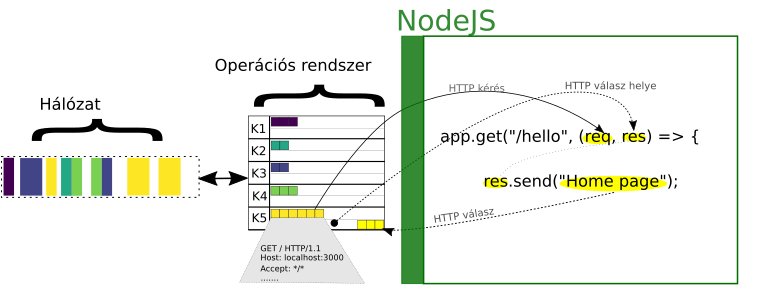

A backend egy (vagy több) szerver oldali program, ami frontendtől jövő kérésket megválaszolja. Ezekben a kérésekben lehet szinte bármi, de leggyakrabban adattárolás, módosítás, lekérdezés, törlés történik.
A teljes kommunikáció ilyen kérés / válasz üzenetekből áll. Amikor beírunk egy url-t a böngészőbe, akkor a böngésző is rögtön egy HTTP kérést küld a szervernek. A szerver pedig visszaküldi a frontend kódját.
A HTML kód értelmezése után a böngésző újabb kéréseket küldhet a szervernek, például a Css, képek, JavaScript kód letöltse. A JavaScript a böngésző API-ján keresztül, önmaga is tud kéréseket küldeni.
Mi az a “kérés” és “válasz”?
A “kérés” és a “válasz” HTTP formátumban leírt üzenet, amit hálózaton keresztül küldünk a szervernek, a szerver pedig ugyan ilyen formában visszaküldi a választ. Ebbe van belekódolva milyen műveletet akarunk végrehajtani és a hozzá tartozó adatok is (ha vannak).
A HTTP formátum (protokoll más néven) részletes leírása itt található.
HTTP kommunikáció példa
(kérés) GET / HTTP/1.1
(kérés) Host: localhost:1323
(kérés) Accept: */*
(válasz) HTTP/1.1 200 OK
(válasz) Content-Type: text/plain; charset=UTF-8
(válasz) Content-Length: 13
(válasz) Hello, World!
Webszerver
A webszerver az a komponense a backend programnak, ami a HTTP kommunikációt elvégzi. Miután beérkezik egy HTTP kérés, a webszerver értelmezi a kérést, feldolgozza és visszaküldi a választ.
A “feldolgozás” sokmindent jelenthet, pl.:
- Ha a kérés egy filet (kép, css, stb) kér akkor megkeresi a filrendszerben és a képet küldi vissza
- Ha egy API kérés akkor megkeresi a hozzá tartozó programkódot, lefuttatja a kódot és visszaküldi az eredményt
Szinte mindig több webszerver van a rendszerben, van amelyiknek az a feladata hogy másik webszervereknek továbbítsa a kérést (reverse proxy).
A webszerver lehet teljesen különálló program (pl Nginx, Traefik) és lehet beépítve a backend programba is.
Backend program példa (HTTP kérés feldolgozása és válasz)
|
|
Ez példa egy NodeJS-en futó, JavaScript program, Express keretrendszerrel. Ezen a példa kódon nézzük meg, miként dolgozza fel és válaszolja meg egy webszerver a kérést.
A 2., 3. sorban betöltjük a keretrendszert, ez nekünk most nem fontos, az ExpressJS dokumentációjában benne van részletesen.
A “Route-ok regisztrálása” részben megmondjuk a keretrendszernek, hogy ha a kérés Method része “GET” és a Path rész egyezik a js kódban megadottal, akkor futassa le a beállított függvényt. A függvény pedig megkapja a kérést és választ reprezentáló objektumokat. A webes keretrendszerekben általában route-oknak hívják a a HTTP protokoll Path részét, de ugyan arról van szó.
A függvény a res objetumba beírja a választ, a keretrendszer pedig visszaküldi.
HTTP kérések formátuma

Angolul, a keretrendszerekben és a HTTP protokollban a kérést request-nek, a választ response-nak hívják és általában res, req-nek rövidítik.
// Kezdőlap route példa
Kérés
Válasz
Home page
// Hello route példa
Kérés
Válasz
Hello World!
Hálózati kommunikáció
|
|
A 17. sorban, indul el a webszerver komponens, ami kezeli a hálózati kommunikációt. A webszerver ezen része, alapvetően egy végtelen ciklus, ami folyamatosan figyeli hogy van-e új bejövő adat a hálózatról vagy kimenő a szerver programtól.

Ez kép a HTTP kérések megválaszolásának a folyamatát mutatja be, az 5 szín 5 külön kapcsolatot reprezentál.
- Hálózaton érkeznek folyamatosan a csomagok. Az adatok csomagokra vannak szétbontva és úgy továbbítódnak a hálózaton, ezek a színes négyzetek.
- Az operációs rendzser szétválogatja a csomagokat és minden klienshez (K1..K5) létrehoz egy adatszerkezetet, amiben többek között van egy buffer a bejövő és egy a kimenő adatoknak.
- A NodeJs figyeli a bejövő buffert, amikor van adat, akkor azt átmásolja a req objektumba.
- A NodeJs az áltálunk írt kódtól jövő adatokat is figyeli. Amikor a send függvénnyel a res objektumba írjuk az adatokat, akkor a NodeJs érzékeli és átmásolja a kapcsolathoz tartozó kimeneti bufferbe.
- Eztán az operációs rendszer elküldi a kimeneti buffer adatait a hálózaton, így kapja vissza az adatot a kliens (böngésző általában).